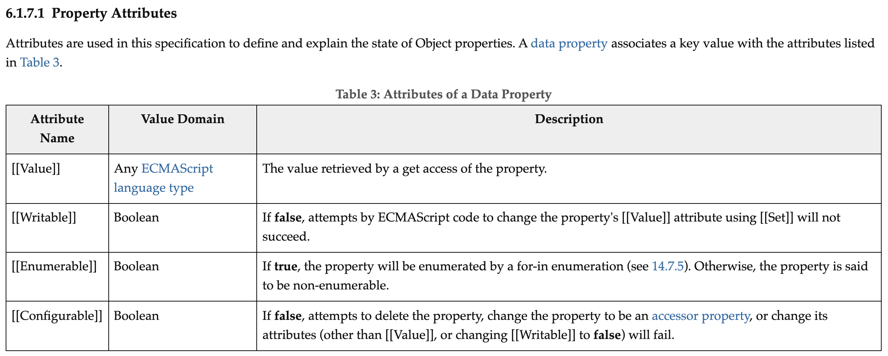
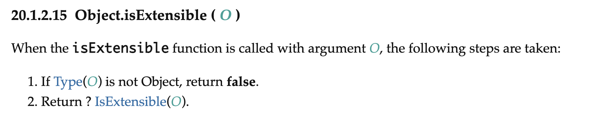
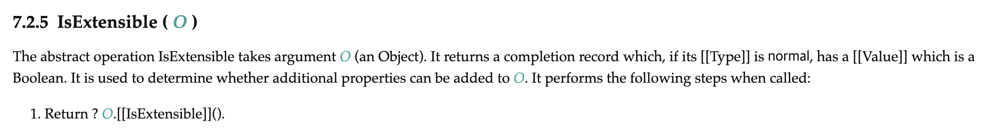

자바스크립트 객체의 변경방지 - 불변성
만약 변하지 않아야 하는 값들이 의도처럼 수정되지 않아야 하지만 수정된다면 의도와 다른 결과가 출력되거나 에러를 일으킬 가능성이 크다.
이때 값들이 변하지 않는 것을 불변하다고 한다 즉 변하지 않는 특성을 불변성이라고 한다.
객체를 다루는데에도 외부의 객체를 수정하지 않도록 하거나, 변하지 않도록 하기 위해서 의도적으로 객체의 프로퍼티가 변경되지 않도록 불변성을 줄 수 있다.
// 객체 변경 방지
Object.preventExtensions(obj);
// 객체 밀봉
Object.seal(obj);
// 객체 동결
Object.freeze(obj);
위 Object 함수의 정적메서드들이 대표적인 것들이다.
해당 메서드들에 대해서 공부하다가 의문점을 가지고 질문을 드려본적이 있는데 이런 부분들에 대해서 이야기 하기전에 프로퍼티 어트리뷰트를 알아야 한다
프로퍼티 어트리뷰트
자바스크립트 엔진은 우리가 프로퍼티를 만들때, 프로퍼티의 상태를 나타내는 프로퍼티 어트리뷰트를 기본값으로 자동 정의한다
내부 슬롯과 내부 메서드
내부 슬롯과 내부 메서드는 자바스크립트 엔징의 구현 알고히즘을 설명하기 위햐 ECMAScript 사양에서 사용하는 의사 프로퍼티 및 의사 메서드이다.
[[ ]]이중 대괄호를 사용해서 나타낸다.
다음은 ECMAScript를 참고한 데이터 프로퍼티의 내부 슬롯이다.
 출처 - tc39
데이터 프로퍼티와 접근자 프로퍼티
프로퍼티는 데이터 프로퍼티와 접근자 프로퍼티로 구분될 수 있다.
| 데이터 프로퍼티 | 키와 값으로 구성된 일반적인 프로퍼티 |
| 접근자 프로퍼티 | 자체적으로는 값을 갖지 않고 다른 데이터 프로퍼티의 값을 읽거나 저장할때 호풀되는 접근자 함수로 구성된 프로퍼티 |
데이터 프로퍼티의 어트리뷰트
| 프로퍼티 어트리뷰트 | 설명 |
|---|---|
[[Value]] |
프로퍼티 키를 통해 프로퍼티 값에 접근하면 반환되는 값. |
[[Writable]] |
프로퍼티 값의 변경 가능 여부를 나타내며 불리언 값을 가진다. |
[[Enumerable]] |
프로퍼티의 열거 가능 여부를 나타내며 불리언 값을 가진다. |
[[Configurable]] |
프로퍼티의 재정의 가능 여부를 나타내며 불리언 값을 가진다. (삭제와 프로퍼티 재정의) |
접근자 프로퍼티의 어트리뷰트
| 프로퍼티 어트리뷰트 | 설명 |
|---|---|
[[Get]] |
데이터 프로퍼티의 값을 읽을 때 호출되는 접근자 함수(getter 함수를 호출) |
[[Set]] |
데이터 프로퍼티의 값을 저장할 때 호출되는 접근자 함수(setter 함수를 호출) |
[[Enumerable]] |
프로퍼티의 열거 가능 여부를 나타내며 불리언 값을 가진다. |
[[Configurable]] |
프로퍼티의 재정의 가능 여부를 나타내며 불리언 값을 가진다. (삭제와 프로퍼티 재정의) |
이런 프로퍼티 어트리뷰트를 확인하려면 Object.getOwnPropertyDescriptors(obj)를 이용해 각 프로퍼티의 어트리뷰트를 확인할 수 있다.
위의 프로퍼티 어트리뷰트를 수정해서 객체를 불변하게 만들 수 있다.
객체 확장 금지
객체에 새로운 프로퍼티가 추가되는 것을 방지한다.
// 객체 확장 금지
Object.preventExtensions(obj);
프로퍼티의 추가는
- 동적추가
Object.defineProperty메서드
를 통해서 할 수 있는데 이때 이러한 동작을 불가능하게 한다.
확장이 가능한 객체인지 확인할때는 다음과 같은 메서드를 사용한다.
Object.isExtensible(obj);
객체 밀봉
프로퍼티 추가, 삭제, 재정의를 금지한다 → 읽기와 쓰기만 가능
// 객체 밀봉
Object.seal(obj);
이때 밀봉된 객체의 프로퍼티 어트리뷰트 [[Configurable]]은 false이다.
따라서 프로퍼티의 삭제가 불가능하고 프로퍼티 어트리뷰트를 재정의 할 수 없다.
밀봉된 객체인지 확인할때는 다음과 같은 메서드를 사용한다.
Object.isSealed(obj);
객체 동결
프로퍼티 추가, 삭제, 재정의, 갱신을 금지한다 → 읽기와 가능
// 객체 밀봉
Object.freeze(obj);
이때 동결된 객체의 프로퍼티 어트리뷰트 [[writeable]]과 [[Configurable]]은 false이다. 따라서 [[Value]]의 값을 변경할 수 없고 프로퍼티 삭제, 프로퍼티 어트리뷰트의 재정의가 불가능하다.
동결된 객체인지 확인할때는 다음과 같은 메서드를 사용한다.
Object.isfrozen(obj);
이때 내가 떠오른 의문점은 바로 다음과 같았다.
아니?! 왜 Object.seal(), Object.freeze()들은 프로퍼티 어트리뷰트의 값을 변경해서 명시적으로 각 기능들이 동작하지 않고록 금지시키는 것은 알겠는데 Object.preventExtensions()는 바꿔주는게 없는건가? 그렇다면 자바스크립트 엔진이 프로퍼티를 추가할 수 있는지 없는지 어떻게 알지?
결론부터 이야기하자면 애초에 말이 안되는 의문이었다. 프로퍼티 어트리뷰트는 각 프로퍼티에 존재하는 값들인데 객체에 프로퍼티를 추가할 경우 프로퍼티의 내부슬롯을 확인하는 것이 아니라 다른 부분(객체의 측면)에서 자바스크립트 엔진이 내부적으로 확인한다는 것이 스스로의 결론이었다.
기나긴 시간 동안의 구글링후에 tc39에서 해당 내용을 찾을 수 있었다.
 
내부적으로 Object.isExtensible(obj) 함수가 매개변수와 함께 호출되었을때, 타입이 Object가 아니면 false를 반환하고 Object일때 추상연산을 수행하는데 해당 객체의 내부 메서드 [[isExtensible]]를 호출한다
[[IsExtensible]] : Boolean을 return한다. 해당 객체에 추가적으로 속성을 추가할 수 있는지 확인하는 메소드
위의 메서드들을 사용하는 것은 객체가 의도치않게 변경되는 것을 방지할 수 있으며, 객체에 불변성을 줌으로서 안전하도록 만든다. 하지만 이런 메소드들에도 한계가 존재하는데 얕은 복사처럼 한단계에만 적용이 된다는 것이다. 따라서 중첩 객체의 경우 재귀적으로 내부의 중첩객체들에 적용을 해주어야 한다.
마지막으로 객체의 변경을 방지하는 메서드들이 어떤 상태로 변경되는지 표로 정리하자면 다음과 같다.
| 구분 | 메서드 | 프로퍼티 추가 | 프로퍼티 삭제 | 프로퍼티 값 읽기 | 프로퍼티 값 쓰기 | 프로퍼티 어트리뷰트 재정의 |
|---|---|---|---|---|---|---|
| 객체 확장 금지 | Object.preventExtensions |
x | o | o | o | o |
| 객체 밀봉 | Object.seal |
x | x | o | o | x |
| 객체 동결 | Object.freeze |
x | x | o | x | x |